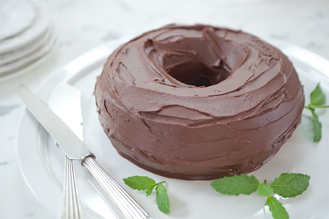

Bolo de Chocolate com Ganache

60min | 6 porções
Ingredientes
- 4 ovos
- 1 xícara (chá) de açúcar
- 1 xícara (chá) de chocolate em pó
- 1 xícara (chá) de óleo
- 1 xícara (chá) de água
- 2 xícaras (chá) de farinha de trigo
- 1 colher (sopa) de fermento
- manteiga, farinha e chocolate em pó para untar e polvilhar
Modo de Preparo
- Preaqueça o forno a 180 ºC (temperatura média). Unte com manteiga uma fôrma redonda com furo no meio, de 24 cm de diâmetro. Faça uma misturinha meio a meio de chocolate em pó e farinha; polvilhe a fôrma toda (assim o bolo não fica com aquela casquinha branca de farinha), chacoalhe e bata para retirar o excesso.
- Numa tigela, coloque a farinha, passando pela peneira.
- Numa tigela grande (ou na batedeira), coloque o açúcar e o chocolate em pó, passando por uma peneira. Numa tigela pequena, quebre um ovo de cada vez e junte ao açúcar - se um estiver estragado você não perde a receita. Adicione o óleo e misture bem com o batedor de arame até ficar liso. Se estiver usando a batedeira, comece batendo na velocidade baixa - para o chocolate não subir - e quando a massa estiver lisa, aumente e bata por mais alguns minutos.
- Se estiver usando a batedeira, diminua a velocidade e, aos poucos, vá adicionando a água e a farinha, alternadamente, batendo apenas para misturar. Por último, adicione o fermento.
- Transfira a massa para a fôrma preparada e leve ao forno para assar por cerca de 30 minutos. Para verificar, espete um palito, se sair limpo está pronto. Retire do forno e deixe esfriar por 15 minutos antes de desenformar.
- Para desenformar: coloque um prato de bolo sobre a fôrma e vire de uma só vez. Deixe o bolo esfriar completamente antes de cobrir com a ganache.
Ganache
Ingredientes
- 200 g de chocolate meio amargo
- ¾ de xícara (chá) de creme de leite fresco
Modo de Preparo
- Leve uma panela pequena com um pouco de água ao fogo médio - ela vai servir de base para o banho-maria.
- Na tábua, pique fino o chocolate. Transfira para uma tigela de vidro (ou inox) e encaixe sobre a panela com água fervente - ela não deve encostar no fundo da tigela, o chocolate deve derreter com o vapor. Junte o creme de leite e misture bem até derreter e ficar lisa.
- Retire a tigela do banho-maria e deixe esfriar. Assim que amornar, leve a geladeira por 10 minutos, retire e misture bem. Se o dia estiver muito quente, repita esse procedimento quantas vezes necessário até esfriar a ganache.
- Com uma espátula, espalhe a ganache sobre o bolo e sirva a seguir.
Obs: se quiser servir a ganache como musse rápida de chocolate, basta deixar na geladeira!